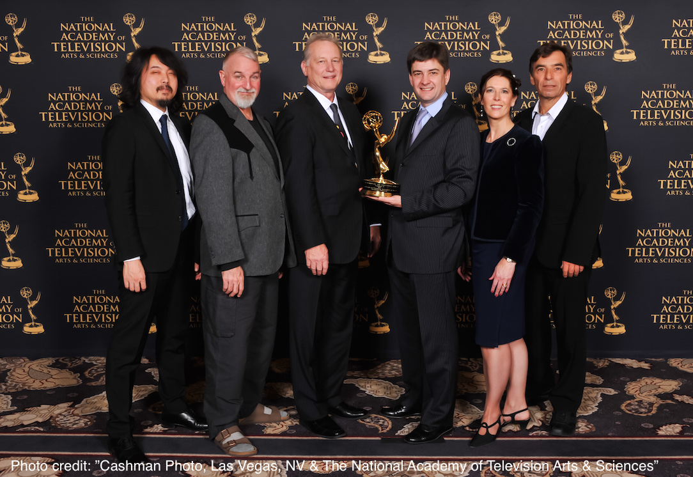
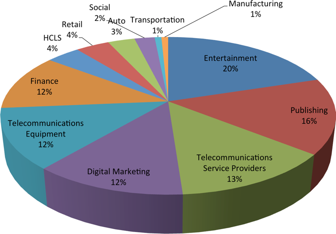
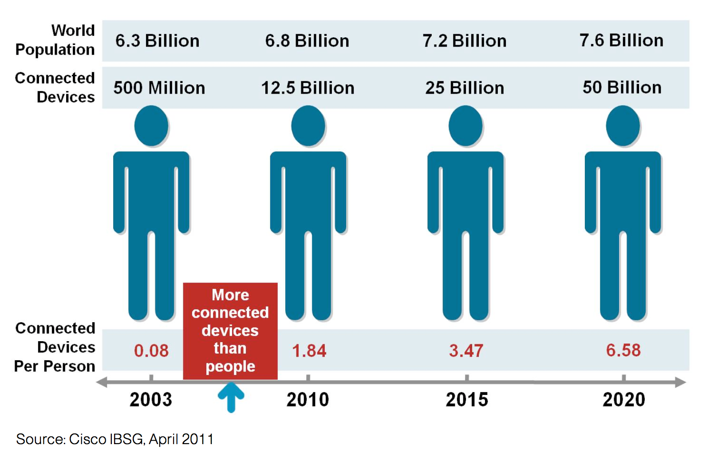
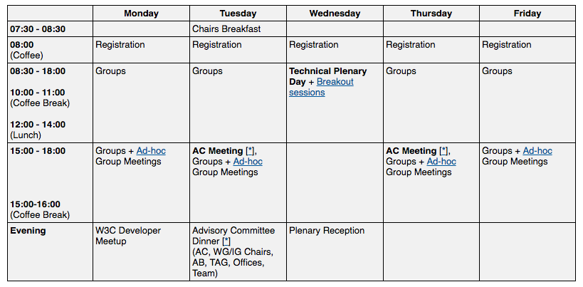

W3C Highlights – Mayo 2016
Gijón, 20 mayo 2016

Oficina W3C España
Gijón, 20 mayo 2016

La conocida como "the next big thing":
| Foco | Extensibilidad de la Web | Aplicaciones Web *Reales* |
|---|---|---|
| Objetivos | Re-utilización Encapsulación Composición Código más limpio |
Mejora del modelo de caché Ciclo de vida Procesamiento en background |
| Proyectos | Web Components (HTML) Houdini TF (CSS) |
Service Workers App manifest |

Uniendo los silos, habilitando un mercado de "cosas"

| Aplicaciones | Juegos, social, entretenimiento Ingeniería, formación, e-Commerce Construcción, turismo, periodismo, etc. |
|---|---|
| Gaps | Codecs, integración con HTML, streaming Web audio, 3D rendering Detección de movimiento (Device orientation API) |
Últimas Recomendaciones:
| AC 2013 | AC 2014 | AC 2015 | AC 2016 | |
|---|---|---|---|---|
| TOTAL | 370 | 378 | 398 | 412 |
| Full | 79 | 83 | 90 | 97 |
| Industry | - | - | 2 | 4 |
| CG/BG Groups | 128 | 193 | 205 | 245 |
| CG/BG People | >2,850 | >4,000 | 5,002 | 6,844 |
| Students (1) | 2K | 2.6K | 48K | 201K |
| Twitter followers | 62K | 84.5K | 120K | 153K |
(1) Courses’ enrolled students (W3DevCampus and W3Cx)
HTMLMediaElementMás info sobre esto: https://www.w3.org/2016/03/EME-factsheet.html
Lisboa, 19-23 Septiembre 2016
